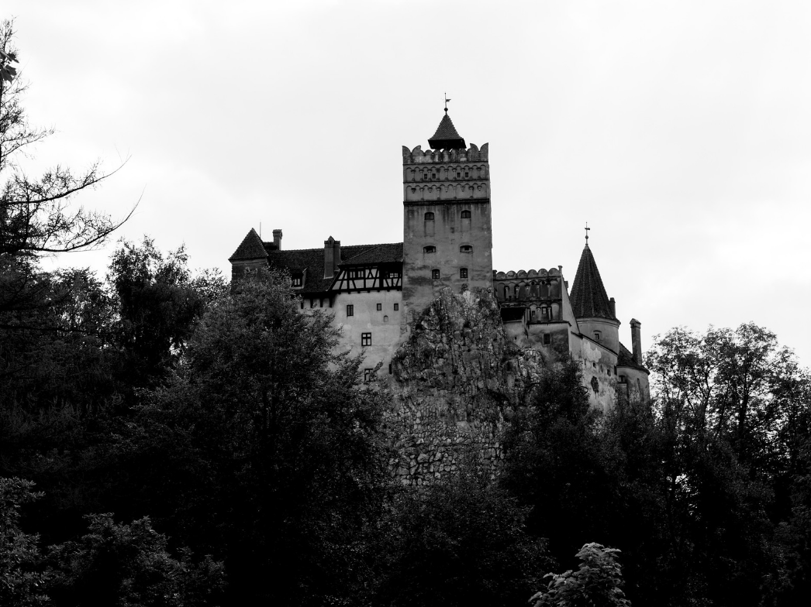
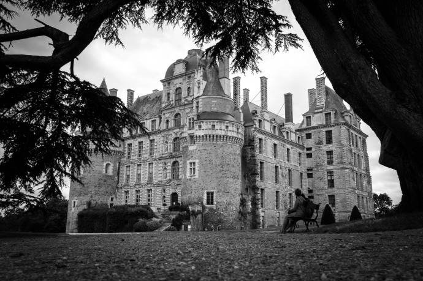
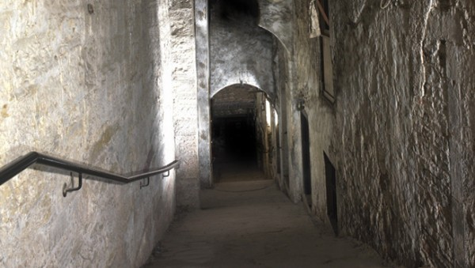
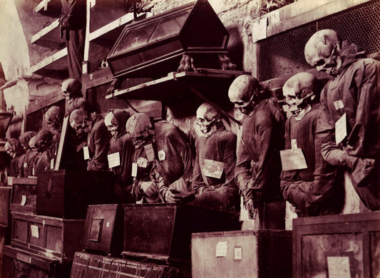

Not everyone enjoys being afraid, and I don’t think it’s a stretch to say that no one wants to experience a truly life-threatening situation. But there are those of us (well, a lot of us) who really enjoy the experience. Lots of people also enjoy scary situations because it leaves them with a sense of confidence after it’s over. Think about the last time you made it through a scary movie, or through a haunted house. You might have thought, “yes! I did it! I made it all the way through!” So it can be a real self-esteem boost.
Each culture has its own superhero monsters—the Chupacabra (South America), the Loch Ness Monster, the Yōkai (supernatural monsters from Japanese folklore), Alps (German nightmare creatures)—but they all have a number of characteristics in common. Monsters are defying the general laws of nature in some way. They have either returned from the afterlife (ghosts, demons, spirits) or they are some kind of non-human or semi-human creature. This speaks to the fact that things that violate the laws of nature are terrifying. And really anything that doesn’t make sense or causes us some sort of dissonance, whether it is cognitive or aesthetic, is going to be scary (axe-wielding animals, masked faces, contorted bodies).
Another shared characteristic of monsters across the globe is their blurred relationship with death and the body. Humans are obsessed with death; we simply have a hard time wrapping our mind around what happens when we die. This contemplation has led to some of the most famous monsters, with each culture creating their own version of the living dead, whether it’s zombies, vampires, reanimated and reconstructed corpses, or ghosts. We want to imagine a life that goes on after we die. Or better yet, figure out a way to live forever.
Humans have been scaring themselves and each other since the birth of the species, through all kinds of methods like storytelling, jumping off cliffs, and popping out to startle each other from the recesses of some dark cave. And we’ve done this for lots of different reasons—to build group unity, to prepare kids for life in the scary world, and, of course, to control behavior. But it’s only really in the last few centuries that scaring ourselves for fun (and profit) has become a highly sought-after experience. If you're a thrill seeker this website will give you a tour of the most scary places on earth to visit and the most horrying haunted houses.
Bran's Castle, Romania

Dracula, the main character of Bram Stoker’s book, has become one of the main tourist attractions from Transylvania region in Romania. Many movies were made, books were written, legends were told but what about the truth? Has Dracula ever existed? Was he truly a vampire? Was the Bran Castle the home of a unmerciful dark prince?
One of the most visited castles in Romania is the Bran Castle (photo above), also known as the home of Dracula. Well, even though Bran is a very impressive construction dating from the 13th century, it was only briefly inhabited by Vlad the Impaler (Dracula), the Wallachian ruler, as he was visiting the area. Built on impressive cliffs, it is easy to see why the Bran Castle was chosen to represent the dwelling of the most dreadful creatures like Dracula himself. Bran Castle was originally a stronghold built by the Knights of the Teutonic Order in 1212. By the late 1200′s, the castle had been overtaken by the Saxons who had used the castle to protect Brasov, an important trade center. In 1370, the fortress was used against invading Turks. It remained an important feudal fortress through out the middle ages.
The castle has four towers. The Powder House Tower is the oldest. It is part of the original castle built in 1212. In the 15th century, during restoration, the Observation Tower and the Eastern Tower were added. The Eastern Tower was built with murder holes that were used by the soldiers to drop hot water and pitch on the castles attackers.
Bran Castle also housed a series of dungeons in its bowels where Vlad reportedly tortured even more of his opponents. In fact, it is this bloody history that inspired Bram Stoker to write his novel, Dracula. The novel's main character is based on Vlad himself, but Stoker took the original legend and embellished it into the quintessential vampire tale, one that still resonates deeply with audiences around the world. Combining the original legend with the literary one, Bran Castle has become known simply as "Dracula's Castle" and it is a major tourist attraction in Transylvania.
Perhaps the echoes of so much violence committed within and outside the castle walls taint the fortress' atmosphere, but there is definitely a distinctly eerie feeling to the castle. Many visitors come there with the notion that Vlad may still lurk there himself, hidden away in some secret niche.
Waverly Hills Sanatorium, Kentucky, United States

There is nothing creepier than an abandoned mental hospital. Waverly Hills takes that to an entirely different level with its immense gothic architecture and history. The hospital opened in 1910 to treat the tuberculosis epidemic but over 8,000 people died during the hospital’s history.In the 1960’s the hospital was converted to help those with mental illness but the hospital is riddled with stories of patient mistreatment, suicide, and medical experiments. This is easily one of the most haunted places in America – prime ghost-hunting territory. But be warned, those who died here did not do so happily.
In many cases, the treatments for the disease were as bad as the disease itself. Some of the experiments that were conducted in search of a cure seem barbaric by today’s standards but others are now common practice. Patient’s lungs were exposed to ultraviolet light to try and stop the spread of bacteria. This was done in “sun rooms”, using artificial light in place of sunlight, or on the roof or open porches of the hospital. Since fresh air was thought to also be a possible cure, patients were often placed in front of huge windows or on the open porches, no matter what the season. Old photographs show patients lounging in chairs, taking in the fresh air, while literally covered with snow.
Other treatments were less pleasant --- and much bloodier. Balloons would be surgically implanted in the lungs and then filled with air to expand them. Needless to say, this often had disastrous results, as did operations where muscles and ribs were removed from a patient’s chest to allow the lungs to expand further and let in more oxygen. This blood-soaked procedure was seen as a “last resort” and few of the patients survived it.
While the patients who survived both the disease and the treatments left Waverly Hills through the front door, the majority of patients left through what came to be known as the “body chute”. This enclosed tunnel for the dead led from the hospital to the railroad tracks at the bottom of the hill. Using a motorized rail and cable system, the bodies were lowered in secret to the waiting trains. This was done so that patients would not see how many were leaving the hospital as corpses. Their mental health, the doctors believed, was just as important as their physical health.
By the late 1930s, tuberculosis had begun to decline around the world and by 1943, new medicines had largely eradicated in the United States. In 1961, Waverly Hills was closed down but was re-opened a year later as Woodhaven Geriatrics Sanitarium. There have been many rumors and stories told about patient mistreatment and unusual experiments during the years that the building was used an old age home. Some of them have been proven to be false but others have unfortunately turned out to be true. Electroshock therapy, which was considered to be highly effective in those days, was widely used for a variety of ailments. Budget cuts in the 1960s and 1970s led to both horrible conditions and patient mistreatments and in 1982, the state closed the facility for good.
Is any wonder, after all of the death, pain and agony within these walls, that Waverly Hills is considered to be one of the most haunted places in the country?
The buildings and land that made up Waverly Hills were auctioned off and changed hands many times over the course of the next two decades. By 2001, the once stately building had nearly destroyed by time, the elements and the vandals who came here looking for a thrill. Waverly Hills had become the local “haunted house” and it became a magnet for the homeless, looking for shelter, and teenagers, who broke in looking for ghosts. The hospital soon gained a reputation for being haunted and stories began to circulate of resident ghosts like the little girl who was seen running up and down the third floor solarium, the little boy who was spotted with a leather ball, the hearse that appeared in the back of the building dropping off coffins, the woman with the bleeding wrists who cried for help and others. Visitors told of slamming doors, lights in the windows as if power was still running through the building, strange sounds and eerie footsteps in empty rooms.
It was at this time that the hospital came to the attention of Keith Age, and the Louisville Ghost Hunter’s Society. Keith was a long-time friend of mine and a representative for the American Ghost Society in Louisville. It would be his work with a television show that would bring him to Waverly Hills. Over the course of the next several years, the group had a number of unexplainable encounters in the building.
One of the legends told of Waverly Hills involves a man in a white coat who has been seen walking in the kitchen and the smell of cooking food that sometimes wafts through the room. During their initial visit, they found the kitchen was a disaster, a ruin of broken windows, fallen plaster, broken tables and chairs and puddles of water and debris that resulted from a leaking roof. The cafeteria had not fared much better. It was also in ruins and the team quickly retreated. Before they could do so though, several of them reported the sounds of footsteps, a door swinging shut and the smell of fresh baked bread in the air. A quick search revealed that no one else was in the building and there was certainly no one cooking anything in the kitchen. They could come up with no logical explanation for what had occurred.
Château de Brissac, France

The Château de Brissac resides just south of the city of Angers, in the Loire River Valley of France. The original castle was built in the 11th century. In the 15th century, the Duke of Brissac took ownership decided to tear down the original medieval castle and replace it with a new castle to be built in a grand Renaissance style. He renamed it Château de Brissac at this time. The twin medieval towers were left in place while the new building was being constructed.
The Duke intended on removing both medieval towers, but he died as the new building was nearing completion and thus the towers were left in place. If you look closely you can see both towers resting against the Renaissance castle, with the back portions of the towers cut away.
This noble castle is the tallest in France, and it exudes old world charm, but one of its past residents has shocked more than one visitor.
A double murder that occurred sometime in the 15th century within the walls of the castle has resulted in one of the more popular ghosts of the Château de Brissac, that of the la Dame Verte, or “Green Lady”. The current residents, the Duke of Brissac and his family, have become accustomed to her roaming the rooms, but she has scared many a guest. She is often seen in the tower room of the chapel wearing her green dress. What’s most terrifying however, is her face. If she looks at you, you’ll see that her face has gaping holes where her eyes and nose should be, resembling a corpse. As well as her sighting, her moans are also often heard throughout the castle in the early hours.
Today, the Château de Brissac is still owned by the Cossé-Brissac family. The property is currently managed by Charles-André de Cossé-Brissac, Marquis of Brissac (b. 1962), who is the eldest son of François de Cossé-Brissac, the current Duke of Brissac (b. 1929).
The château has seven stories altogether, making it the tallest château in the Loire Valley.[6] The château is open to the public for tours and overnight stays in its guest rooms, and the luxurious gilded theater hosts the annual Val de Loire festival. It was also used until recently as a location for Brazilian celebrity magazine "Caras".
Island of the Dolls, Mexico

On a dark and creepy island in the canals of Xochimico near Mexico City sits what might be the world’s strangest and scariest tourist attraction ever. However, this sad island was never meant to be a stop on tourists’ holiday itineraries. The Island of the Dolls was dedicated to the lost soul of a poor little girl who met her fate too soon.
The Island of the Dolls (Isla de las Munecas) sits in the canals south of Mexico City and is the current home of hundreds of terrifying, mutilated dolls. Their severed limbs, decapitated heads, and blank eyes adorn trees, fences and nearly every available surface. The dolls appear menacing even in the bright light of midday, but in the dark they are particularly haunting.Not surprisingly, the island’s origins lie in tragedy. The story goes that the island’s only inhabitant, Don Julian Santana, found the body of a drowned child in the canal some 50 years ago. He was haunted by her death, so when he saw a doll floating by in the canal soon after, he hung it in a tree to please the girl. He hoped to both appease her tortured soul and protect the island from further evil.One doll in a tree, however, was not enough to ease Santana’s troubled mind. He continued to fish dolls and doll parts out of the canal whenever he saw them, hanging each one carefully on the island. There weren’t enough canal dolls to satisfy Santana’s tortured spirit, so he began scavenging more from trash heaps on his rare trips away from home. Later in life, he began trading his home-grown fruits and vegetables for dolls.
Many stories have been associated with the island over the years. A popular tale was that Don Julian had gone mad and believed the dolls to be real children who he pulled from the canal and tried to revive. But the truth, as told by his family members who now run the island as a tourist attraction, is that Don Julian simply believed the island was haunted by the spirit of the little girl. For reasons only known to Don Julian himself, he believed that he could make the dead girl happy and keep evil at bay by hanging discarded dolls in all of the island’s trees.
The story took a particularly sinister turn in 2001 when Don Julian drowned in the canal just like the little girl. Many people said that the dolls, inhabited by tortured spirits, conspired to murder the old man. Others believe that Santana’s death was an accident and that since his passing, the dolls have taken over his role as the island’s caretaker.
Although the island did not receive much tourist attention during Don Julian’s lifetime, it has become a well-known attraction since then. International television crews have filmed there several times, including one show that claimed to find proof the island is haunted.
Getting to the island is a long and difficult task, but walking among the creepy dolls is an experience like no other. Most, if not all, of these dolls were rejected by their previous owners for various reasons. Severed limbs and body-less heads hang side-by-side with whole, sun-bleached dolls. Mold covers some, while others are missing nearly all of their artificial hair. Spiders and insects have taken up residence in the hollow parts of most of the dolls.
Although Don Julian’s sentiment was innocent and admirable, the doll graveyard he created is undeniably creepy. Soulless eyes follow visitors as they move around the small island (which is actually a chinampa, or artificial floating garden), and many swear that they can hear the dolls whispering to them. This labor of love (or fear, as it were) has resulted in an accidental sensation amongst those who admire the bizarre and twisted side of tourism.
Mary King’s Close, Edinburgh, Scotland

Hauntings here have been reported as far back as the 17th century, making this one of the most enduringly haunted places in the world. The Close is composed of a series of underground streets and tunnels that led to various businesses and homes in the 16th and 17th centuries. After plague broke out here it was abandoned, but apparently many spirits of plague victims and past residents still remain. Footsteps that seem to follow close behind are often heard, as well as disembodied voices and various apparitions, including a little girl named Annie.a ghostly pre-teen who (so the story goes) scared the daylights out of a Japanese psychic in 1992. This lady had been unimpressed by the tour until she arrived at one of the many small rooms. There she was suddenly struck by an overwhelming feeling of sickness, hunger and cold and, when she tried to leave felt the ghastly tug of a ghostly hand on her leg.
Poor Annie's spectral life has now been fleshed out and it is believed that she had been left to die by her family. Since then, people from round the world have come to "Annie’s room". Many have told tour guides of seeing impressions of the spirit in the room; some visitors, treating the room as a shrine, have left gifts for the little girl out of affection.
Poor Annie's spectral life has now been fleshed out and it is believed that she had been left to die by her family. Since then, people from round the world have come to "Annie’s room". Many have told tour guides of seeing impressions of the spirit in the room; some visitors, treating the room as a shrine, have left gifts for the little girl out of affection.
Sceptic, open-minded or believer, the tour itself is a wonderful experience and well orchestrated by the operators, Continuum. Authentically dressed guides lead visitors out of the sunshine downstairs into the murky past through vaults and alleyways that form the remnants of 17th-century Edinburgh. They punctuate the gloom with eye-opening and historical information, practised banter and the occasional heart-thumping shock. The uncharacteristic drop in temperature in Annie's room is disconcerting.A growing list of people who believe they've seen spirits here has led to a number of experiments being conducted in the close. Ryan O'Neill from Scottish Paranormal, a group of amateur enthusiasts of the supernatural, captured "very faint white or transparent spheres" when photographing the recreated workshop. His group hopes to find these "spiritual orbs" again when they conduct experiments during the Edinburgh Ghost festival, 13-22 May.
Capuchin Catacombs of Palermo, Italy

Of all the catacombs in the world, from Salzburg to Paris, none are quite as creepy as Sicily’s Catacombe dei Cappucini (Capuchin Catacombs). The macabre space was created out of necessity back in the late 16th century—the cemetery at the Capuchin monastery became overrun, so the underlying crypts were excavated to make more room. Religious men were originally intended to be the exclusive residents, with a friar named Silvestro da Gubbio being the first inductee in 1599. However, once word got out about the natural mummification processes occurring in the space, it soon became a status symbol for local citizens to earn a final resting spot there (in their best clothing, of course).
As a result, the underground tombs now contain around 8,000 bodies divided into separate corridors, including one for religious figures, one for professional men, one for children, and even one for virgins. The corpses are displayed like a museum exhibit, dressed to the nines and arranged in grotesquely lifelike posts. Sound like fun? Good news: The Capuchin Catacombs are open every day from 9:00 a.m. to 12:30 a.m., and 3:00 to 5:30 p.m.
The Capuchin catacombs hold the remains of over 8000 souls, their disembodied shells propped up against the walls or resting in open caskets. Down in the cold, dry basement of the monastery, the relentless march of decomposition takes its sweet time. It’s a gruesome display. Though some bodies have been reduced to skulls and bones, the majority of corpses are still rotting, and their half-decomposed husks are the stuff of nightmares.
Face skin slowly peeling off skulls. Corpses striking ghoulish poses as their bodies slowly fall apart. Hollowed-out faces with grotesque grimaces, teeth and even mustaches still intact. An infant in a tiny coffin, its face reduced to a pile of crinkled skin, like dry, crushed leaves. Monks dressed in hooded robes, staring at you from their eternal perch, and an entire army of the baby-undead. It isn’t the kind of horror which jumps out at you, and you scream and then laugh about it. No, the catacombs provide the long-lasting sense of dread which worsens with each step. Which becomes more unbearable the longer you remain.